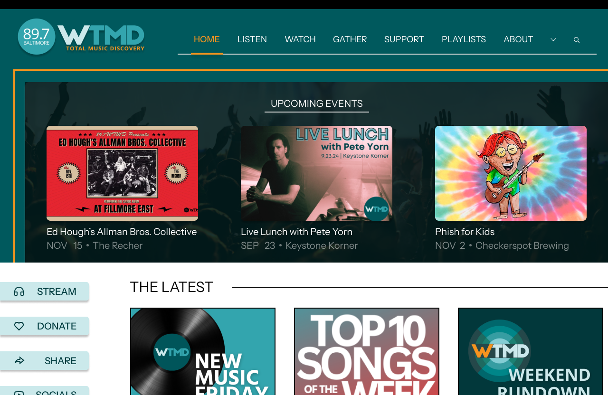

WTMD Radio Redesign
A Maryland Public Radio Station
Overview
The purpose of the WTMD Radio Home Page is to serve as the central hub for WTMD, a public radio station, providing listeners with access to live music streaming, playlists, and program schedules.
Audience
The audience of wtmd.org consists of Baltimore locals, and supporters of public radio who enjoy discovering new music and engaging with community events.
Objective
To create a more organized, visually appealing, and user-friendly interface. This involves improving navigation, enhancing readability, and establishing a cohesive color scheme that aligns with the station’s branding. The goal is to provide users with a seamless experience and improve the listening experience for their audience.
Role
UX Designer
Tools Used
Figma
Duration
September 2024
Identifying Pain Points
Usability Testing
Cluttered Navigation Bar
• Multiple drop-down menus and large, bright yellow icons concentrated in the top right corner
• Overwhelming and visually unbalanced for users
Overlapping Text and Images
• Unreadable text regarding event details was placed over images with a black opaque square as a background
• Text was not aligned with the images, which reduced readability and added to the visual clutter
Inconsistent Color Scheme
• Lack of harmony in the color palette
• Bright yellow elements seemed out of place and weren’t effectively integrated into the overall design
Redesign Changes
Addressing User Pain Points
- Moved 'stream' and 'donate' icons to the bottom left of the page
- Enlarged the logos and contrasted their colors with the background using a light blue derived from the logo
- Reduced the size of images and repositioned text beneath them
- Added a drop shadow to images to create a separation from the background and improve their visibility
- Added more yellow elements for consistent branding and to visually separate sections
- Used yellow in the scroll feature of the navigation bar to indicate the user’s current page clearly
Before & After: WTMD Redesign
Homepage Redesign Comparison
Before:

After:
More Projects
Check out my other work